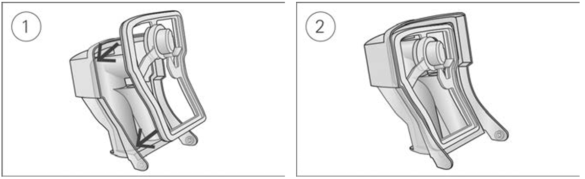
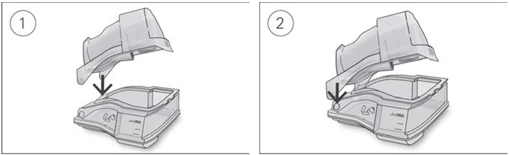

Some parts of your device are designed to easily come off to help prevent damage to the parts or the device. You can reassemble them as described below.


Note: Any serious incidents involving this device should be reported to ResMed and the competent authority in your country.